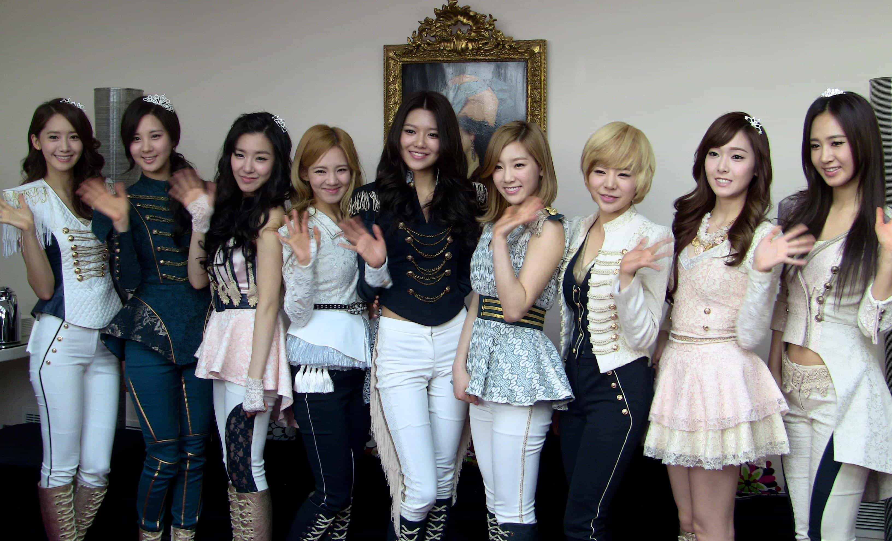

< < < Back
5 Things Westerners Can Learn From The K-pop Industry – Return Of Kings
The K-pop industry is an interesting phenomenon. It does largely hinge upon Western and global technology, music genres and producers, but adjusted for East Asian cultural values and business models it manages to produce more than silly tunes.
Westerners—both sexes, but especially androgynized women—can actually learn something substantial from the South Korean pop music industry. If not for other reasons, then because it does remind us of how the U.S. used to be in the 1980s (but updated to current technology) with regard to the sex roles and beauty standards.
1. Heteronormative relationships
The American sociologist John Lie in his book K-pop (2014) describes the multi-directional cultural flows from the West to the East (and a little bit from the East to the West, since Korean dramas and Korean pop music have a significant number of fans in Western countries). From the premise that South Korea is an export-oriented country, he analyzes the K-pop industry’s business strategies.
Overall it is of course primarily about to make money for particular companies, and secondarily to improve the national image of South Korea (national branding), but sometimes the process of money-making overlaps interesting cultural phenomena.
As much as one may think that Korean men tend to look feminine—partly because of general physiognomy, partly due to feminized fashion trends—the social conservatism that one finds in the East is in fact being re-produced within the K-pop industry.
Most of the silly songs are about girls who are mad at bad boys, or guys who like girls. It is easy to criticize the, although mannered, betaness of Korean males, the narcissistic entitlement of Korean women (Girls’ Generation, Girl’s Day etcetera give a hint about the East Asian version of you-go-girl-ism), and the at least partial admiration for Western degenerate consumerist culture. But as long as the moderate modernity in the East is present, it reminds us and other people how things generally ought to be.

2. Dance moves
The way you move is, if not always crucial, then at least potentially favorable or detrimental. As a Machiavellian strategy to get people on your side, learn to move, pose and even dance in a way that makes vaginas wet and manginas mad.
Of course, this perhaps clownish behavior is not only positive, but even traditional masculinity is linked to various dance performances. With the decline of night game, dance floor conduct may become gradually irrelevant, but it is still easy to think of various contexts in which kinaesthetic confidence matters to some extent.
Instead of being reactionary and pessimistic, think in an innovative fashion and use (hyper)modernity in a way that benefits your life and ability to influence others. Some male K-pop groups are particurly skilled in dancing and thus a great source of inspiration.
3. Personality training and education
Several ROK writers, like Roosh, have pointed out the bad personality profile and lack of foreign language skills that American women in general manifest. K-pop stars on the other hand learn to behave well, optimize their beauty potential by means of strict diet programs, and speak foreign languages. All linked to maximize profit of course, but if that can help women to better themselves and be role models for other females, then so be it.
Besides from capitalism, this dimension is partly linked to traditional culture. A K-pop scholar, Swee-Lin Ho, has stressed this in the article ”Fuel for South Korea’s “Global Dreams Factory”: The Desires of Parents Whose Children Dream of Becoming K-pop Stars” (2012):
The agency also controls how trainees are grouped and groomed, and subjects all trainees to a comprehensive inseong gyoyuk that teaches trainees to inculcate and practice values such as humility, obedience, loyalty and gratitude. The focus of inseong gyoyuk is on family values, the purpose of which was explained to me by several corporate trainers as threefold: to assure parents that their young are being educated properly to develop “proper values,” to teach trainees to display behaviors that are highly regarded as by the wider Korean society and, more importantly, to subordinate trainees to the authority of their respective agencies as dependents are expected to do so to authoritative figures in the family.

4. Hyper-feminine looks
In South Korea and Japan, skinny is the best. Only about 4% of women are obese, and within K-pop one finds many thin and cute girls.
As with the sex roles, hypermodern ideals can sometimes reflect upon how the artists are styled, but overall hyper-feminine looks dominate the appearances of the largest share of female performers. These girls remind one of how things could be (but generally are not, due to self-inflicted ugliness and fatness). What a waste of potential.
5. Traditional corporate ideals
The Korean music companies are, although not completely run, largely run by men and partly based on traditional East Asian (post-Confucian) and Western values (militarism).
These modern males, with a traditional penchant, set the standards for the younger generations with regard to corporate customs and innovative entrepreneurship. Even though female elements and knowledge are required within the business (grooming, song-writing and singing).
Perhaps one could regard it as yin and yang working together in an office environment. But as much as women contribute, focused, determined, logical, responsible and disciplined men are behind these successful companies.
Read More: What Modern South Korea Is Like